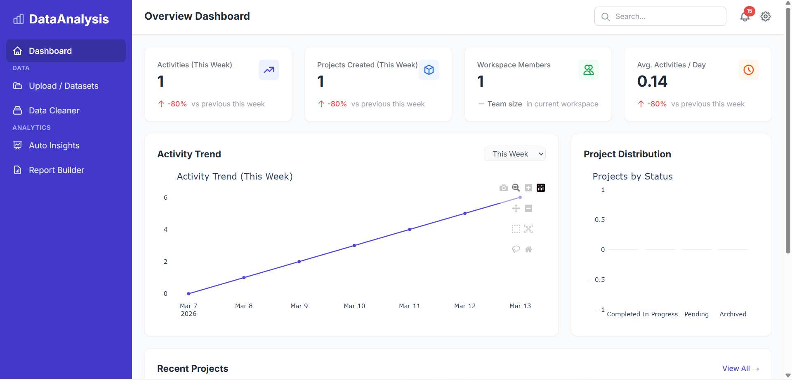

From ML models to full-stack applications, these projects show how I turn ideas into working solutions.
Recent
Data Analysis Platform

Built during Python Full Stack placement training as a web-based platform where users can securely upload messy CSV or Excel files, clean data in the browser, generate interactive dashboards, and export PDF reports without writing code. Implemented authentication, isolated user workspaces, analytics tracking, data cleaning, Plotly dashboards, and PDF generation.
End-to-end ML pipeline on UCI red + white wine datasets. Preprocessing with mean imputation, IQR outlier removal, categorical encoding, and Min-Max scaling. Benchmarked Logistic Regression, KNN, SVC, Decision Tree, and Random Forest via confusion matrix, classification report, and 5-fold CV. Random Forest won.
Designed an interactive Power BI dashboard to transform raw business data into clear, decision-ready insights with KPI cards, trend analysis, and drill-down visuals for faster reporting.
Built an Excel-based interactive dashboard to track key metrics, highlight trends, and present clean visual summaries for faster and more informed decision-making.
Full-stack Contact Book built with Flask, HTML, CSS, and JavaScript, applying DSA concepts like Trie for prefix search and Hash Maps for fast email, phone, and ID lookups. Includes add/edit/delete, favorites, CSV import/export, birthday reminders, duplicate detection, and filtering by category or country.
AI-powered grant finder chatbot using a Flask backend and vanilla HTML/CSS/JavaScript frontend, with relevance-based grant matching and an interactive chat workflow.
Completed a Python Full Stack placement training program where I learned end-to-end web development across frontend, backend, databases, and deployment concepts. The training covered Django, Flask, SQL, React, and Next.js, and the mini-projects in my portfolio were built by applying those concepts. As part of the training, I also developed a Data Analysis Platform with authentication, user-specific workspaces, CSV/Excel cleaning, interactive dashboards, and PDF report export.
Highlights
Achievements
Recognitions, badges, and verified certificates that reflect continuous learning and participation.
Jul 2025Adobe India Hackathon 2025
Represented Lovely Professional University as part of team Hack Street Boys.
Feb 2026Prepare Data for ML APIs on Google Cloud - Skill Badge
Issued by Google Cloud. Demonstrated foundational skills in data cleaning with Dataprep, data pipelines in Dataflow, Spark jobs in Dataproc, and ML API usage (Natural Language, Speech-to-Text, and Video Intelligence).
Mar 2026Oracle Cloud Infrastructure 2025 Certified AI Foundations Associate
Issued by Oracle. Covers foundational AI & ML concepts, supervised and unsupervised learning, deep learning (CNNs, RNNs, LSTMs), Generative AI and Large Language Models, and the full OCI AI/ML services portfolio including OCI Generative AI and Oracle 23ai. Valid until March 2028.
Mar 2026Oracle Data Platform 2025 Certified Foundations Associate
Issued by Oracle. Validates foundational knowledge of Oracle Cloud Data Management including Autonomous Database, Exadata, MySQL, NoSQL, OCI Analytics, AI Data Services, and database migration & upgrade options. Valid until March 2028.